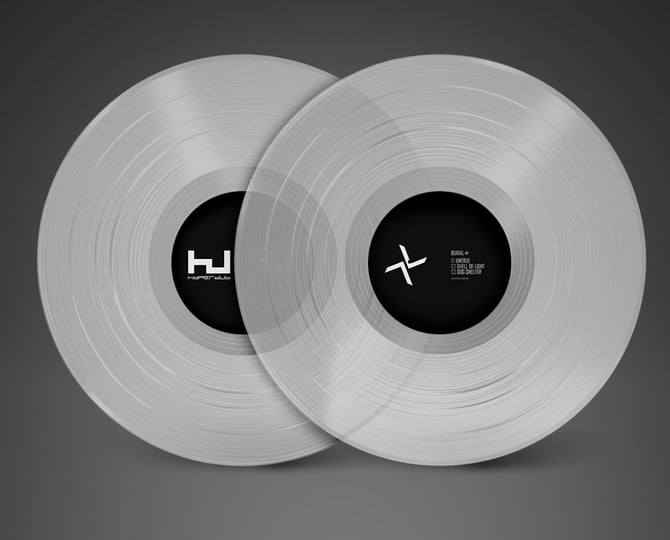

Released in 2007, Burial’s *Untrue* is a landmark album in the evolution of electronic music, particularly the dubstep and UK garage genres.
The album blends elements of electronic, ambient, and experimental music to create a haunting, emotionally charged sound that has resonated deeply with listeners.
This analysis explores the production techniques, thematic elements, and emotional atmosphere of the album, shedding light on why *Untrue* remains a vital and influential piece of music.
Production Techniques

The production of *Untrue* is known for its intricate sound design, emotional depth, and unique use of space.
Burial utilizes various techniques to create a sense of isolation and melancholy that permeates throughout the album.
Atmosphere and Sound Design
The album is rich with atmospheric elements. Field recordings, ambient noises, and atmospheric soundscapes create a dreamlike environment.
Burial uses these sounds to establish a sense of urban isolation, often evoking images of rainy nights in an empty city.
Rhythm and Drum Patterns
One of the most distinctive features of *Untrue* is its unconventional drum rhythms.
Burial's rhythms are off-kilter, with syncopated drum patterns and lo-fi elements that give the tracks a fractured, experimental quality.
Vocal Manipulation
Burial’s use of vocal samples is a key element of the album. He often manipulates these vocals by pitching them down, applying heavy reverb, and fragmenting them to evoke a ghostly, distant feeling.
This technique enhances the album's sense of emotional ambiguity and longing.
Themes and Atmosphere
The dominant themes in *Untrue* revolve around loneliness, heartache, and yearning.
Burial's production creates a deep sense of emotional isolation, evoking feelings of melancholy and nostalgia.
The album’s mood is a reflection of the urban landscape, where connections are fleeting, and solitude is a constant companion.
Emotional Depth
The emotional atmosphere of the album is heightened by Burial’s ability to blend ambient textures with the lo-fi aesthetics of dubstep and garage.
The combination of these elements creates an immersive, almost cinematic experience where the listener can feel the emotional weight of each track.
Urban Isolation
Much of the album’s sound reflects the experience of navigating a modern, anonymous urban environment.
Samples of rain, distant sirens, and muffled conversations convey a sense of being alone in a sprawling city, where personal connections feel distant and out of reach.
Conclusion
Burial’s *Untrue* remains a pivotal album in electronic music, notable not only for its production techniques but also for its emotional depth and atmospheric richness.
The album captures a sense of isolation and longing through its innovative use of sound and its poignant exploration of urban solitude.
*Untrue* is a timeless work that resonates deeply with listeners, inviting them to immerse themselves in its evocative soundscapes.